What makes a song popular in todays world? Is there a secret receipt for success? In this project I investigate these and further questions using a open source data set of Spotify tracks.
About the data set: The dataset is collated from Spotify’s API using two separate python scripts to extract popular and non-popular songs and their associated audio and descriptive features. Descriptive features of a song include information about the song such as the artist name, album name and release date. Audio features include key, valence, danceability and energy which are results of spotify’s audio analysis.
Step 1. Load the libraries
#renv::install("ISLR")library(tidyverse) #basic
── Attaching core tidyverse packages ──────────────────────── tidyverse 2.0.0 ──
✔ dplyr 1.1.4 ✔ readr 2.1.5
✔ forcats 1.0.0 ✔ stringr 1.5.1
✔ ggplot2 3.5.1 ✔ tibble 3.2.1
✔ lubridate 1.9.4 ✔ tidyr 1.3.1
✔ purrr 1.0.2
── Conflicts ────────────────────────────────────────── tidyverse_conflicts() ──
✖ dplyr::filter() masks stats::filter()
✖ dplyr::lag() masks stats::lag()
ℹ Use the conflicted package (<http://conflicted.r-lib.org/>) to force all conflicts to become errors
library(tibble) #tibblelibrary(ggplot2) #ggplotlibrary(ggExtra) #for marginal histograms and morelibrary(ggrepel) #label for graphslibrary(ggcorrplot) # for ggpcorrpltoslibrary(ggthemes)library(viridis)
Loading required package: viridisLite
library(viridisLite)library(scales) #palettes for high readability and accessibility for visualisations
Attaching package: 'scales'
The following object is masked from 'package:viridis':
viridis_pal
The following object is masked from 'package:purrr':
discard
The following object is masked from 'package:readr':
col_factor
library(grid)library(gt) # for tableslibrary(gtsummary)library(ggsurvey)
Loading required package: survey
Loading required package: Matrix
Attaching package: 'Matrix'
The following objects are masked from 'package:tidyr':
expand, pack, unpack
Loading required package: survival
Attaching package: 'survey'
The following object is masked from 'package:graphics':
dotchart
Loading required package: hexbin
library(gtExtras) # for tableslibrary(webshot2) # save gt tables as pnglibrary(data.table) #transpose data frames
Attaching package: 'data.table'
The following objects are masked from 'package:lubridate':
hour, isoweek, mday, minute, month, quarter, second, wday, week,
yday, year
The following objects are masked from 'package:dplyr':
between, first, last
The following object is masked from 'package:purrr':
transpose
library(extrafont) # for extra fonts
Registering fonts with R
library(lubridate) #dates to numericlibrary(showtext) #for adding fonts
Loading required package: sysfonts
Loading required package: showtextdb
Attaching package: 'showtextdb'
The following object is masked from 'package:extrafont':
font_install
library(caret) #train test data set
Loading required package: lattice
Attaching package: 'caret'
The following object is masked from 'package:survival':
cluster
The following object is masked from 'package:purrr':
lift
library(glmnet) # for ridge regression
Loaded glmnet 4.1-8
library(ISLR) # for splines and polyslibrary(splines)loadfonts(device="win", quiet=TRUE)font_add_google(name="Barlow", family="Barlow")showtext_auto()options("scipen"=100, "digits"=4)
Step 2. Global options
options(digits=3)
Step 3. Import data
data <-read.csv("data/high_popularity_spotify_data.csv")
Step 4. Check data
print("Are there any missing values in the data set?")
[1] "Are there any missing values in the data set?"
sum(is.na(data))
[1] 1
print("only 1 missing value. Exclude it")
[1] "only 1 missing value. Exclude it"
data <- data %>%na.omit(data)print("Is the data in a tibble format?")
[1] "Is the data in a tibble format?"
is_tibble(data)
[1] FALSE
print("convert into a tibble format")as_tibble(data)
Which genres are dominating and when have been the tracks released?
To get a bigger picture about tracks in the data set, it could be interesting, how many tracks in the data set belongs to a certain genre. Also, it could be a useful background information in which year and which month a song is released.
Firs, let us have closer look to the genres. Genres are assigned by using the Spotify’s categorization of the playlist, where the track in. Overall, the data set contains tracks from 73 playlists. 0 have sung the the tracks, so some artists have sung more than of the songs in the data set or some songs are listed twice, because they are assigned to different genres. All in all 28 are in the data set.
#create a nice table with all the genres in itgenres_table <- data %>%group_by(playlist_genre) %>%summarize(Frequency =n()) %>%#number per grouparrange(desc(Frequency)) %>%gt() %>%#for nice tabletab_header(title="Number of tracks per genre") %>%cols_label(playlist_genre="Genre") %>%tab_options(column_labels.background.color = vi.col_1)%>%tab_style(style=cell_text(weight='bold',font =google_font("Barlow")),locations=cells_title(groups='title')) %>%gt_theme_nytimes()genres_table
Number of tracks per genre
Genre
Frequency
pop
357
rock
235
hip-hop
227
latin
184
electronic
148
gaming
100
ambient
61
arabic
50
punk
50
r&b
50
blues
45
metal
35
folk
33
afrobeats
20
brazilian
14
j-pop
11
classical
10
k-pop
10
indian
9
korean
8
turkish
7
reggae
5
indie
4
world
4
country
3
lofi
2
soul
2
jazz
1
For assessing the genres, I subset the data to avoid bias and get a clearer overview.
class(data$playlist_genre)data$playlist_genre <-as.factor(data$playlist_genre)table(data$playlist_genre)#get a subset with genres >=30 to avoid biasgenre_levels30 <- data %>%group_by(playlist_genre) %>%summarize(N=n()) %>%filter(N >=30)data$genre30 <-ifelse(data$playlist_genre %in% genre_levels30$playlist_genre, as.character(data$playlist_genre), "Others")table(data$genre30)#subset to include the big genres >=100 onlygenre_levels100 <- data %>%group_by(playlist_genre) %>%summarize(N=n()) %>%filter(N >=100)data$genre100 <-ifelse(data$playlist_genre %in% genre_levels100$playlist_genre, as.character(data$playlist_genre), "Others")table(data$genre100)
What genres does the tracks have?
#get numbers per subgenredata_genre <- data %>%group_by(genre100) %>%summarize(freq=n()) %>%#compute percentages and positionsmutate(percentage =paste(100*round(freq /sum(freq),2),"%"), pos=cumsum(freq) - freq-2)genre_pie <-ggplot(data_genre, aes(x="", y=freq, fill=genre100))+geom_bar(stat="identity", position="stack",color="white", size=2)+geom_text(aes(label=percentage, color=genre100), position=position_stack(vjust=0.5))+scale_color_manual(values=c(rep("white",4), rep("black",3)))+guides(color="none")+coord_polar("y",start=0,clip="off")+scale_fill_viridis(discrete=TRUE, option="inferno")+theme_void()+theme(text=element_text(size=12,family ="Barlow"),axis.line =element_blank(),axis.text =element_blank(),axis.ticks =element_blank())+labs(x =NULL, y =NULL, fill="Playlist Genre",title="Tracks by Genre", subtitle="Pie Chart")
Warning: Using `size` aesthetic for lines was deprecated in ggplot2 3.4.0.
ℹ Please use `linewidth` instead.
genre_pie
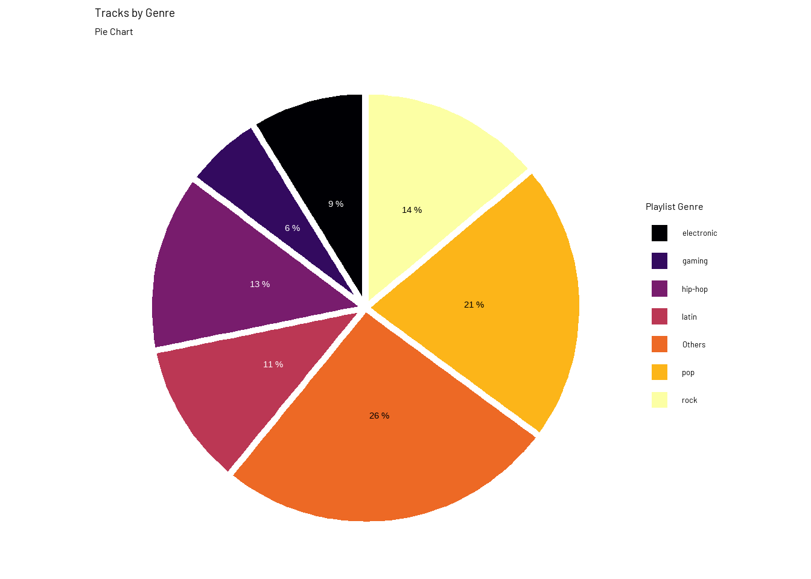
Let’s have a look into the subgenres, where categories are under 20 are assigned to the category “Other” for an better overview.
subgenre_levels50<- data %>%group_by(playlist_subgenre) %>%summarize(N=n()) %>%filter(N >49)data$subgenre50 <-ifelse(data$playlist_subgenre %in% subgenre_levels50$playlist_subgenre, as.character(data$playlist_subgenre), "Others")subgenre_data <- data %>%# group and summarize the freqgroup_by(subgenre50) %>%summarize(freq=n()) %>%#get pos and percentagesmutate(percentage =paste(100*round(freq /sum(freq),2),"%"), pos=cumsum(freq) - freq-2) %>%#get the cumulative percentages for top and bottom of each rectanglemutate(ymax =c(cumsum(freq)),ymin =c(0, head(ymax, n=-1)),pos= ymax +ymin/2,label =paste0(subgenre50, "\n:", percentage))subgenre_donut <-ggplot(subgenre_data, aes(x=3.5, y=freq, fill=subgenre50)) +geom_col(color="white", size=2) +geom_text(aes(label = percentage, color=subgenre50),position =position_stack(vjust =0.5)) +scale_color_manual(values=c(rep("white",5), rep("black",4)))+guides(color="none")+scale_fill_viridis(discrete=TRUE, option="inferno")+coord_polar(theta="y") +labs(fill="Subgenres", title="Percentage of Subgenres", subtitle="Doghnut Plot")+xlim(c(0.2, 3.5+0.5))+theme_void()+theme(text=element_text(size=12,family ="Barlow"))subgenre_donut
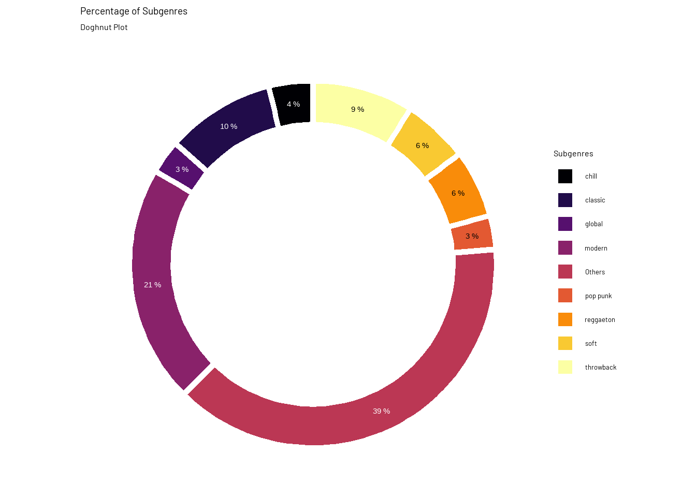
When have been the songs released? What is the time span, we are talking about?
#modify for only getting the yearsdata$release_year <- base::substr(data$track_album_release_date,1,4)data$release_year <-as.numeric(data$release_year)#get the monthsdata <- data %>%mutate(release_month=month(track_album_release_date))print("How many values for months are missing?")
[1] "How many values for months are missing?"
table(is.na(data$release_month))
FALSE TRUE
1604 81
How old are the songs in the data set?
max(data$release_year)
[1] 2024
year_hist <-ggplot(data, aes(release_year))+geom_histogram(fill=vi.col_1)+labs(title ="How many of the songs are released in a certain year?", subtitle="Histogram",x="Year", y="Frequency")+scale_x_continuous(breaks=seq(1950,2025,5), limits =c(1950,2025))+theme_own()year_hist
`stat_bin()` using `bins = 30`. Pick better value with `binwidth`.
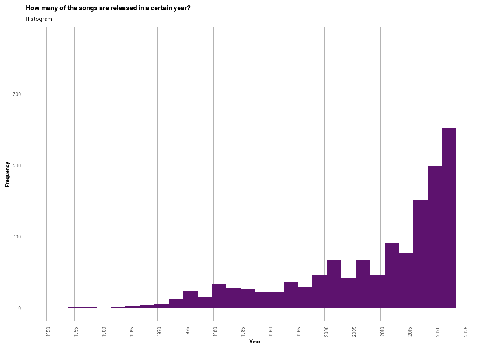
You can see, the most popular songs are not that old! Could we get more information about it?
print("What is the average age on an song in the data set?")
[1] "What is the average age on an song in the data set?"
data <- data %>%mutate(track_age =2024- release_year)mean(data$track_age)
[1] 11.7
print("On the average, songs in the data set are around 12 years old/")
[1] "On the average, songs in the data set are around 12 years old/"
print("And what is the median?")
[1] "And what is the median?"
median(data$track_age)
[1] 6
print("Interesting! 50 percent of the songs in the data set has been released in the last 6 years!")
[1] "Interesting! 50 percent of the songs in the data set has been released in the last 6 years!"
Is there a favorite month for releasing an album?
month_hist <-ggplot(data, aes(release_month))+geom_histogram(fill=vi.col_1.2)+labs(title ="How many of the songs are released in a certain year?", subtitle="Histogram",x="Year", y="Frequency")+scale_x_continuous(breaks=seq(1,12,1), limits =c(1,12))+theme_own()month_hist
`stat_bin()` using `bins = 30`. Pick better value with `binwidth`.
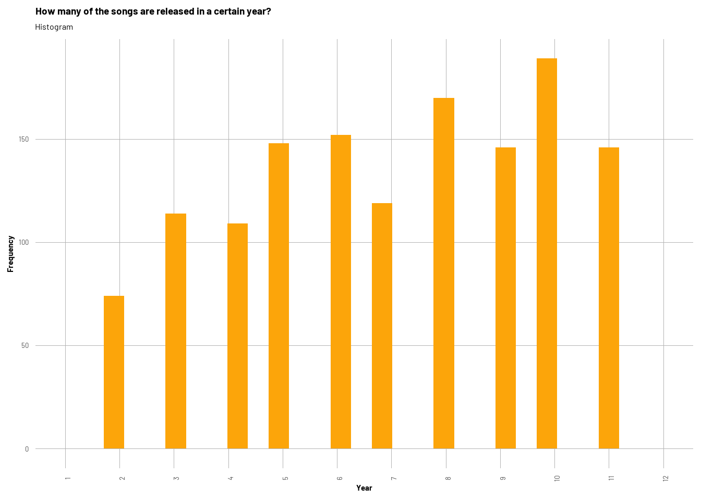
Also interesting! Having in mind we have 1604, 81 in the data set, this graph shows none of the tracks have been released in January or December. Most tracks had definitely been reselased October. The begin of autumn gives apparently the spirit for extensive music listening.
How are the features connected to each other?
Twelve audio features are given in this data set, which are used by spotify for data analysis. The following table shows the features:
feature_tabledata <-data.frame(Features=c("Energy", "Tempo", "Danceability", "Loudness", "liveness", "Valence", "Speechiness", "Instrumentalness", "Mode", "Key","Duration_ms", "Acousticness"),Description=c("A measure of intensity and activity. Typically, energetic tracks feel fast, loud, and noisy.","The speed of a track, measured in beats per minute (BPM).", "A score describing how suitable a track is for dancing based on tempo, rhythm stability, beat strength and overall regularity.", "The overall loudness of a track in decibels (dB). Higher values indicate louder tracks overall.", "The likelihood of a track being performed live. Higher values suggest more audience presence.", "The overall musical positiveness(emotion) of a track. High valence sounds happy; low valence sounds sad or angry.", "Measures the presence of spoken words.", "The likelihood a track contains no vocals. Values closer to 1.0 suggest solely instrumental tracks.", "Indicates the modality of the track.","The musical key, represented as an integer from 0 to 11, mapping to standard Pitch class notation.","The length of the track in milliseconds.", "A confidence measure of whether a track is acoustic(1) or not(0).")) feature_table <-gt(feature_tabledata) %>%tab_header(title="Features",subtitle="Spotify's Analysis Features") %>%tab_options(column_labels.background.color = vi.col_1)%>%tab_style(style=cell_text(weight='bold',font =google_font("Barlow")),locations=cells_title(groups='title')) %>%tab_style(style=list(cell_fill(color="thistle"),cell_text(weight="bold")),locations=cells_body(columns=Features)) %>%gt_theme_nytimes()feature_table
Features
Spotify's Analysis Features
Features
Description
Energy
A measure of intensity and activity. Typically, energetic tracks feel fast, loud, and noisy.
Tempo
The speed of a track, measured in beats per minute (BPM).
Danceability
A score describing how suitable a track is for dancing based on tempo, rhythm stability, beat strength and overall regularity.
Loudness
The overall loudness of a track in decibels (dB). Higher values indicate louder tracks overall.
liveness
The likelihood of a track being performed live. Higher values suggest more audience presence.
Valence
The overall musical positiveness(emotion) of a track. High valence sounds happy; low valence sounds sad or angry.
Speechiness
Measures the presence of spoken words.
Instrumentalness
The likelihood a track contains no vocals. Values closer to 1.0 suggest solely instrumental tracks.
Mode
Indicates the modality of the track.
Key
The musical key, represented as an integer from 0 to 11, mapping to standard Pitch class notation.
Duration_ms
The length of the track in milliseconds.
Acousticness
A confidence measure of whether a track is acoustic(1) or not(0).
Let’s first have a look at two features, that I find particularly interesting, danceability and energy. In my opinion, both features could be very crucial, when it comes to the characterization of music. I would assume, that both features are somehow interwined to each other and also in some way connected to the other factors as well. I would like to explore, if I can see hints for a connection using data visualization. Also, it is likely, that these features are also very different distributed through genres.
How are danceability and energy are connected?
Create a density plot to explore, how the distributions overlap. Use all data for it.
energy_dance_dense_plot <-ggplot(data, aes(x=danceability, y= energy))+geom_point(colour="#1F988BFF")+geom_density_2d_filled(alpha=0.5)+geom_density_2d(colour="#440154FF")+labs(title="Energy and Danceability", subtilte="Density Plot")+scale_color_viridis_c(option="inferno")+scale_y_continuous(breaks=seq(0,1,0.25), limits=c(0,1))+scale_x_continuous(breaks=seq(0,1,0.25),limits=c(0,1))+theme_own()energy_dance_dense_plot
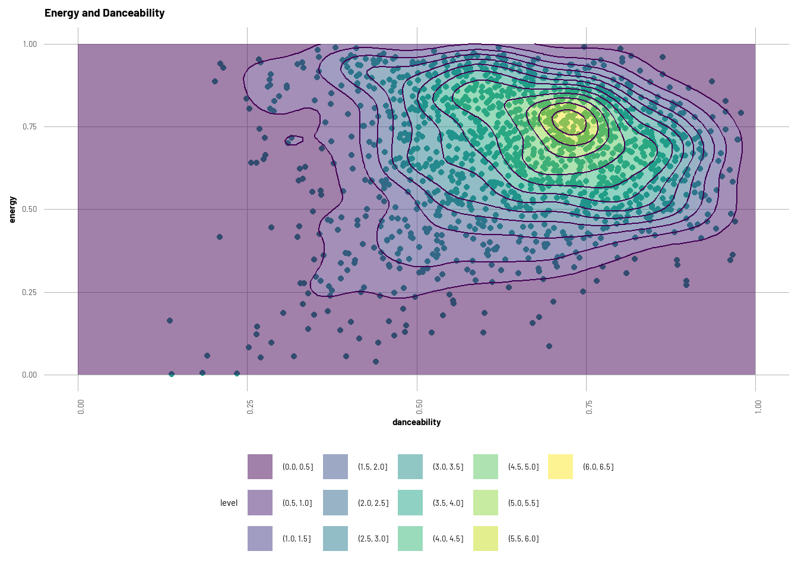
Key insights:
You can see from this graph, that tracks on spotify are high in energy and danceability (the density under 0.25 in energy and danceability are very low, the highest density is around 0.75 and quite high) → our inituition would say us, that a lot of songs are characterized by high energy and high density. The density plot gives a first hint, that this could actually the case.
Let’s create a scatter plot to investigates connections. It gives good insgiths in possible relationsships. Use the data set with only the 6 biggest genres in it, so the plot isn’t to messy
energy_dance_scat_plot <-ggplot(data, aes(danceability, energy))+geom_point(alpha=0.7,aes(color= genre100))+labs(title="Energy and dancability by genre", subtitle="Scatter plot", color="Playlist genre")+scale_color_viridis(discrete=TRUE, option="inferno")+scale_y_continuous(breaks=seq(0,1,0.25), limits=c(0,1))+scale_x_continuous(breaks=seq(0,1,0.25),limits=c(0,1))+theme_own()energy_dance_scat_plot
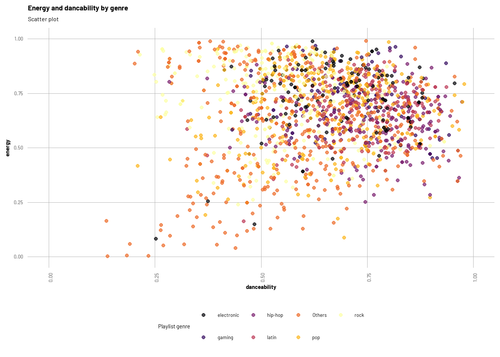
Key insights:
whereas rock and pop music tracks could also have lower danceability, the most tracks of the other genres are characterized by an higher dancability than 0.4
interesting is, that rock music has higher energy, but if the energy level is lower, they can have also I higher dancability.
most of the electronic tracks are high in energy.
especially for energy you can see that the vast majority is high in energy
Let’s plot the density in direct comparison, neglecting the genres.
energy_dance_dense_plot <-ggplot(data)+geom_density(aes(energy, ..density..), fill=vi.col_1)+#topgeom_label(aes(x=0.9, y=0.8,label="Energy"), color=vi.col_1)+geom_density(aes(danceability, -..density..), fill=vi.col_1.2)+#bottomgeom_label(aes(x=0.9, y=-0.8,label="Danceability"), color=vi.col_1.2)+theme_own()+labs(title="Comparision of Danceability and Energy Distributions", subtitle="Kernel Density plots", xlab="Score of Energy / Danceability")energy_dance_dense_plot
Warning: The dot-dot notation (`..density..`) was deprecated in ggplot2 3.4.0.
ℹ Please use `after_stat(density)` instead.
Warning in geom_label(aes(x = 0.9, y = 0.8, label = "Energy"), color = vi.col_1): All aesthetics have length 1, but the data has 1685 rows.
ℹ Please consider using `annotate()` or provide this layer with data containing
a single row.
Warning in geom_label(aes(x = 0.9, y = -0.8, label = "Danceability"), color = vi.col_1.2): All aesthetics have length 1, but the data has 1685 rows.
ℹ Please consider using `annotate()` or provide this layer with data containing
a single row.
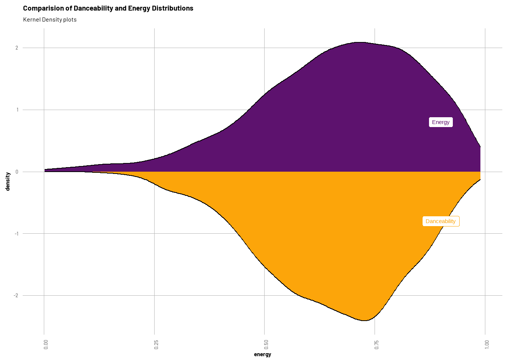
That looks so connected ! Most of the tracks in the data set has a very high danceability and a higher energy!!
Shall we compare the distributions of these items more detailed using kernel densitiy distributions and compare the genres?
While electronic, pop, and rock are very high in energy, especially latin and hip hop music has a very high danceability
it seems like that songs, that have a middle to high danceability has a middle to high energy.
It seems like danceability and energy are somehow connected. Are there songs, that have a higher danceability and are lower in energy or vice versa? Let’s find out using the whole data set this time!
track_artist track_name playlist_genre
1 Stone Temple Pilots Interstate Love Song - 2019 Remaster rock
2 Coldplay Fix You pop
3 My Chemical Romance I'm Not Okay (I Promise) punk
4 My Chemical Romance The Ghost of You punk
5 Lynyrd Skynyrd Free Bird rock
track_popularity energy tempo danceability loudness liveness valence
1 72 0.927 171 0.215 -7.33 0.1260 0.490
2 82 0.417 138 0.209 -8.74 0.1130 0.124
3 74 0.940 180 0.210 -3.43 0.2690 0.255
4 70 0.886 146 0.202 -3.81 0.6430 0.192
5 75 0.834 118 0.249 -8.21 0.0924 0.337
speechiness instrumentalness acousticness playlist_subgenre
1 0.0452 0.0066100 0.000273 classic
2 0.0338 0.0019600 0.164000 soft
3 0.1230 0.0000000 0.006020 pop punk
4 0.0816 0.0000000 0.028600 pop punk
5 0.0574 0.0000969 0.074200 southern
Looks like tracks with high energy and low danceability are kind of outliers and deviates from the patterns. If you inspect the table you can see, that all the five songs have low speechiness, low instrumentalness and low acoustics in common. Though, they don’t belong to the same genre.
Having a look on the next table, where tracks have a high danceability and low energy, you can see this is a much more common combination. Especially ambient tracks have these characteristics.
lowenergy_highdance <- data %>%filter(energy<0.25& danceability>0.25) %>% dplyr::select(track_artist, track_name, playlist_genre, track_popularity, energy, tempo, danceability, loudness, liveness, valence, speechiness,instrumentalness,acousticness,playlist_subgenre) %>%arrange(danceability)print("This are the top ten at the list, ordered by danceability")
[1] "This are the top ten at the list, ordered by danceability"
head(lowenergy_highdance,10)
track_artist track_name
1 leadwave memories
2 The Cinematic Orchestra, Patrick Watson To Build A Home
3 Gibran Alcocer Idea 1
4 Fabrizio Paterlini Waltz
5 Hans Zimmer Time
6 Patrick Watson Je te laisserai des mots
7 Billie Eilish listen before i go
8 Whitney Houston I Will Always Love You
9 Lana Del Rey, Bleachers Margaret (feat. Bleachers)
10 Gibran Alcocer Idea 9
playlist_genre track_popularity energy tempo danceability loudness liveness
1 electronic 70 0.0823 67.2 0.252 -27.3 0.0857
2 folk 72 0.1220 148.7 0.264 -15.4 0.0940
3 classical 71 0.1460 172.1 0.265 -21.1 0.1040
4 classical 71 0.0516 87.6 0.270 -33.8 0.1120
5 classical 71 0.0968 62.9 0.286 -16.8 0.0861
6 folk 83 0.1870 132.7 0.303 -16.8 0.1020
7 ambient 74 0.0561 79.8 0.319 -23.0 0.3880
8 blues 75 0.2140 67.5 0.332 -12.5 0.0839
9 ambient 78 0.2450 103.8 0.340 -13.4 0.0633
10 classical 72 0.1380 128.6 0.340 -24.9 0.1120
valence speechiness instrumentalness acousticness playlist_subgenre
1 0.0381 0.0344 0.92800000 0.951 vaporwave
2 0.0735 0.0349 0.34900000 0.885 indie
3 0.4160 0.0323 0.89300000 0.985 neo-classical
4 0.1990 0.0442 0.95300000 0.986 neo-classical
5 0.0395 0.0323 0.69600000 0.178 neo-classical
6 0.2120 0.0356 0.49900000 0.989 indie
7 0.0820 0.0450 0.00384000 0.935 academic
8 0.1100 0.0349 0.00000562 0.845 classic
9 0.1920 0.0319 0.09920000 0.969 academic
10 0.3250 0.0357 0.84600000 0.984 neo-classical
print("How many tracks meet this characteristics?")
[1] "How many tracks meet this characteristics?"
nrow(lowenergy_highdance)
[1] 41
Which role plays the tempo for danceability and energy?
First of all, tempo is often seen as a good indicator for genres. Let’s explore if this is true for this data with a dot plot!
# Prepare the data and get the mean and standard deviationtempo_dot_data <- data %>%group_by(playlist_genre) %>% dplyr::summarise(Mean=mean(tempo), SD=sd(tempo))# Plot a cleaveland dot plottempo_genre_dot <-ggplot(tempo_dot_data, aes(x=reorder(playlist_genre, Mean), y=Mean))+geom_pointrange(aes(ymin = Mean - SD, ymax = Mean + SD ), size=1, col=vi.col_1)+labs(title="The average tempo and the standard deviation per genre", subtitle="Cleaveland Dotplot", x="Genre", y="Tempo in BPM")+theme_own()+coord_flip()tempo_genre_dot
Warning: Removed 1 row containing missing values or values outside the scale range
(`geom_segment()`).
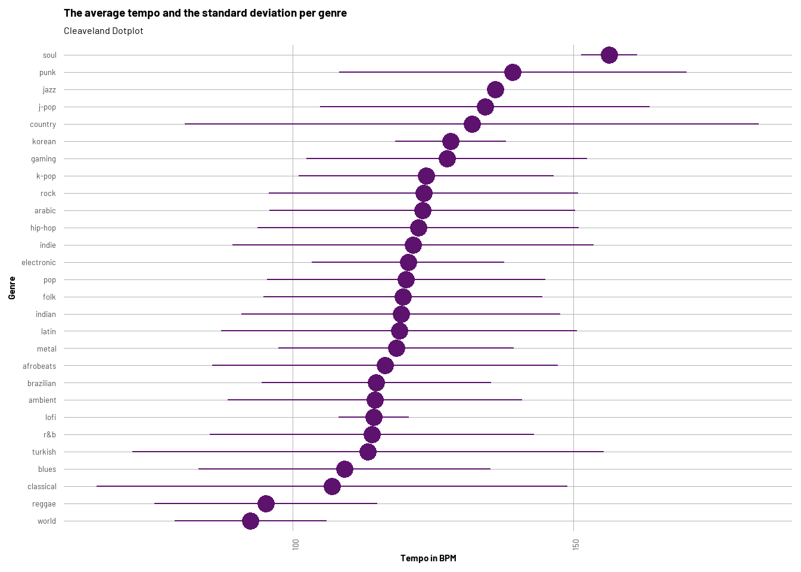
Overall, the average BPM in each genre is quite high! That is a bit surprising, because music experts detected lower BPM are common for certain music types. For instance, Hip Hop is normally characterized by 85 to 95 BPM. Could be a hint, that popular tracks are a bit faster, than usual for their genre.
Let’s create a categorial variable for tempo to explore, how tempo is connected to danceability and energy.
First, plot a density plot to see the distribution for useful categorization. Use the full data set this time.
tempo_dense_plot <-ggplot(data, aes(tempo))+geom_density(alpha=0.6,color=vi.col_1, fill=vi.col_1)+geom_histogram(aes(y=..density..), colour=vi.col_1,fill= vi.col_1, alpha=0.2)+scale_x_continuous(breaks=seq(0,250,50), limits=c(0,250))+labs(title="Tempo distribution of tracks", subtitle ="Densitity plot", x="Density", y="Tempo in BPM")+theme_own()tempo_dense_plot
`stat_bin()` using `bins = 30`. Pick better value with `binwidth`.
Warning: Removed 2 rows containing missing values or values outside the scale range
(`geom_bar()`).
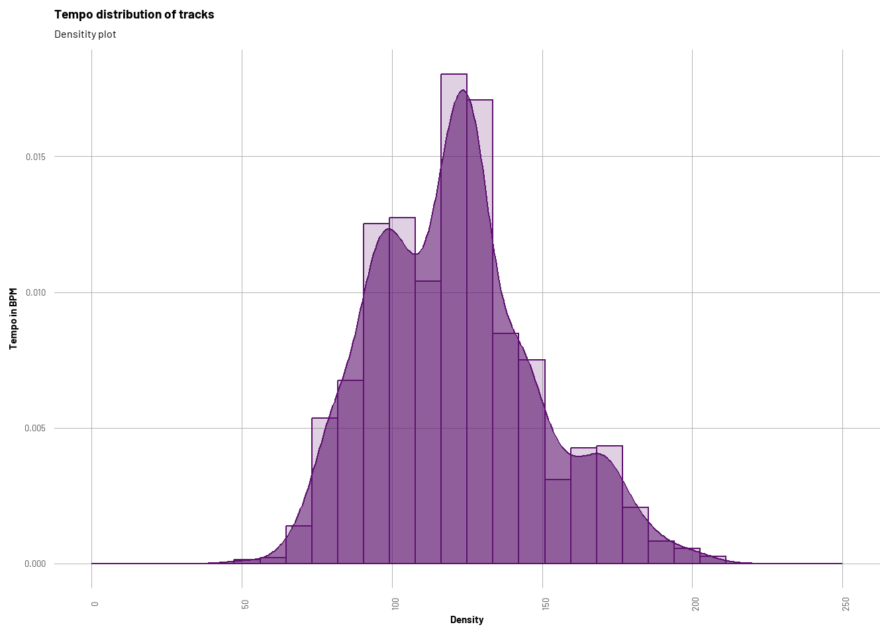
You can see, there is a wide range of tempo! Let’s build categories out of it!
data<- data %>%mutate(tempo_cat =case_when(tempo <90~"less than 90", tempo <=120~"up to 120", tempo <=150~"up to 150", tempo <=180~"up to 180", tempo >180~"more than 180"))#releveldata$tempo_cat <-factor(data$tempo_cat, levels=c("less than 90","up to 120","up to 150","up to 180", "more than 180"))
energy_dance_tempo_plot <-ggplot(data, aes(danceability, energy))+geom_point(alpha=0.7, col=vi.col_1.3)+labs(title="Energy and dancability by genre", subtitle="Scatter plot", color="Playlist genre")+scale_color_viridis(discrete=TRUE, option="inferno")+scale_y_continuous(breaks=seq(0,1,0.25), limits=c(0,1))+scale_x_continuous(breaks=seq(0,1,0.25),limits=c(0,1))+theme_own()+facet_wrap(~tempo_cat)energy_dance_tempo_plot
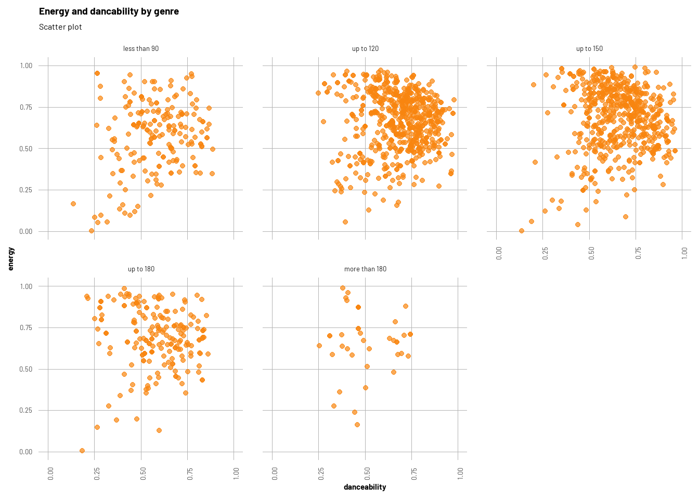
Looks like over 180 BPM is a bit hard to dance to. Though the energy is very high!
Overall, the established range of songs between 90 and 120 BPM has in general the best scores for danceability and energy. Not that much of surprise, isn’t it?
So far, we investigated how three of the features are related to each other using data visualization. Following the former steps of data visualitzation we are only able to plot three variables at once. Of course, we could add a forth variable to it, using another group variable in the “Energy and dance by genre” graph. But in doing this, the graph isn’t very concise anymore and the recipient will need a lot of time to find out what is exactly going on. So, let’s move to the next step for plotting multiple relationships of the features at once.
How do each of the features correlate with each other?
With a correlation plot, we can visualize the relationships of all features at once.
# subset the data set to extract only features out of itfeatures_data <- data %>% dplyr::select(energy, tempo, danceability, loudness, liveness, valence, speechiness, instrumentalness,acousticness,duration_ms, key, mode)# create a correlation matrixfeatures_cor <-round(cor(features_data),1)# create a corrplotfeatures_corrplot <-ggcorrplot(features_cor, hc.order=TRUE, #use hierarchical clustering for better overviewtype="upper", #only the upper part for better overview, cause two sided correlationoutline.col ="white",lab=TRUE) +#get labelsscale_fill_gradientn(colors = vi.col_light)
Scale for fill is already present.
Adding another scale for fill, which will replace the existing scale.
features_corrplot
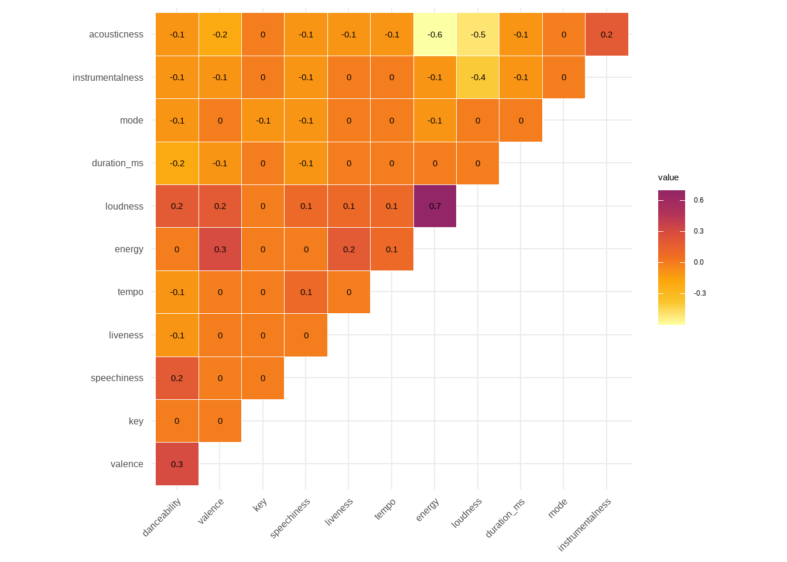
What we can see from the plot is that only vert few features are connected to each other, interesting!
Not connected with any feature in a remarkable way:
- key, speechiness, liveness, mode, tempo, duration and instrumentalness have no or only a minimum (>=0.2) correlation to the other features - valence and danceability and valence and energy has a small correlation of 0.3 -> there is a small correlation in the positiveness of a track and their danceability and energy, what seems to make sense, don’t you think? - energy and loudness (0.6) have a positive, moderate correlation -> the more loud the music is, the more energy is in the music and vice versa - also, the energetic the music is, the less acoustic a track is (-0.7) (and vice versa) - the more acoustic (-.05) or instrumental (-0.4) a track is, the less loud is song. - was is especially interesting is, that the correlation of energy and danceability is zero, which means, no linear connection can’t be found. This is very contradictory what can be assessed from the data visualisation before. That does not necessarily mean that there isn’t any realtionship at all, it is more an indicator, that no linear relationship can’t be found in the data.
Is there a secret receipt for a tracks’ popularity?
Of course, we could further investigate, how the features are connected to each other and how the relationship of the certain categories looks like. However, these features are created by spotify to deconstruct a track into certain components for the purpose of analysis. So, it would be more suitable to use them in that way. One option is, to use the features and create models to predict certain genres. Sadly, the dataset is a bit small for that and underrepresented genres fall short. A better option is to use the characterists and analyze, if we can build a convincing model to predict the popularity in tracks. Can we find a secret receipt for a track’s popularity? This is fun question to answer, isn’t it?
Before we start, let’s explore the distribution of popualriy in this track.
print("What are the top ten tracks?")
[1] "What are the top ten tracks?"
data %>% dplyr::select(track_artist, track_name, playlist_genre, track_popularity) %>%arrange(desc(track_popularity)) %>%head(10)
track_artist track_name playlist_genre track_popularity
1 Lady Gaga, Bruno Mars Die With A Smile pop 100
2 Lady Gaga, Bruno Mars Die With A Smile gaming 100
3 Lady Gaga, Bruno Mars Die With A Smile pop 100
4 ROSÉ, Bruno Mars APT. pop 98
5 ROSÉ, Bruno Mars APT. pop 98
6 Billie Eilish BIRDS OF A FEATHER pop 97
7 Billie Eilish BIRDS OF A FEATHER gaming 97
8 Billie Eilish BIRDS OF A FEATHER pop 97
9 Chappell Roan Good Luck, Babe! pop 94
10 Chappell Roan Good Luck, Babe! gaming 94
Okay, interesting! All of the tracks belongs to the genre pop or genre and some of the songs are listed twice, because their genre assignment to pop and gaming. What are the most unpopular songs?
print("What are the ten most unpopular songs?")
[1] "What are the ten most unpopular songs?"
data %>% dplyr::select(track_artist, track_name, playlist_genre, track_popularity) %>%arrange(track_popularity) %>%head(10)
track_artist
1 Van Halen
2 Eagles
3 Pyotr Ilyich Tchaikovsky, André Previn, London Symphony Orchestra
4 Ludwig van Beethoven, Paul Lewis
5 BabyChiefDoit
6 BigXthaPlug
7 41, Kyle Richh, Jenn Carter, TaTa
8 Pop Smoke, 50 Cent, Roddy Ricch
9 Polo G
10 Lil Durk, Lil Baby, Polo G
track_name
1 You Really Got Me - 2015 Remaster
2 Life in the Fast Lane - 2013 Remaster
3 Tchaikovsky: Swan Lake, Op. 20, Act 2: No. 10, Scene. Moderato
4 Sonata No. 14 "Moonlight" in C-Sharp Minor", Op. 27 No. 2: I. Adagio sostenuto
5 The Viper
6 The Largest
7 Bent (with Kyle Richh, Jenn Carter & TaTa)
8 The Woo (feat. 50 Cent & Roddy Ricch)
9 Neva Cared
10 3 Headed Goat (feat. Lil Baby & Polo G)
playlist_genre track_popularity
1 rock 68
2 rock 68
3 classical 68
4 classical 68
5 hip-hop 68
6 hip-hop 68
7 hip-hop 68
8 hip-hop 68
9 hip-hop 68
10 hip-hop 68
We can see, the ten least popular tracks sharing the same popularity value of 68.
Warning: Removed 2 rows containing missing values or values outside the scale range
(`geom_bar()`).
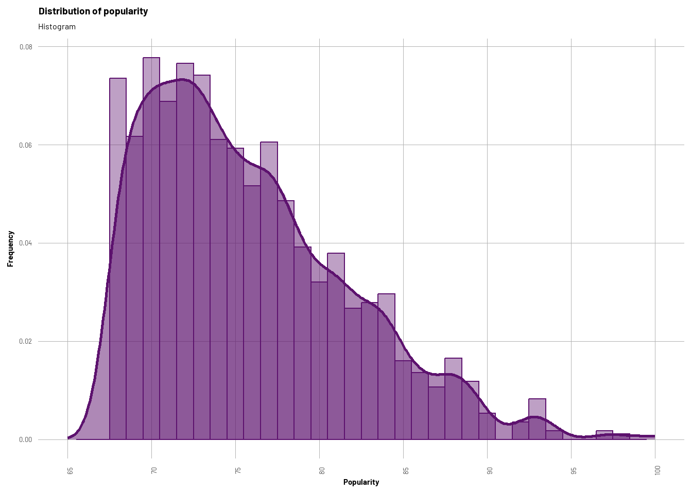
only a few tracks reach a very high popularity score. Most of the tracks have a score from 68 to 78.
Popularity by genre
Now, let’s explore the popularity by genre.
pop_data <- data %>%group_by(playlist_genre) %>%summarize(Mean=mean(track_popularity), SD=sd(track_popularity))pop_dot<-ggplot(pop_data, aes(y= Mean, x=reorder(playlist_genre, Mean)), color=vi.col_1)+geom_pointrange(aes(ymin = Mean - SD, ymax = Mean + SD ), color=vi.col_1)+labs(title="Popularity by Genre", subtitle="Cleaveland Dotplot")+scale_y_continuous(limits=c(60,90))+theme_own()+labs(y="Genre", x="Popularity")+coord_flip()pop_dot
Warning: Removed 1 row containing missing values or values outside the scale range
(`geom_segment()`).
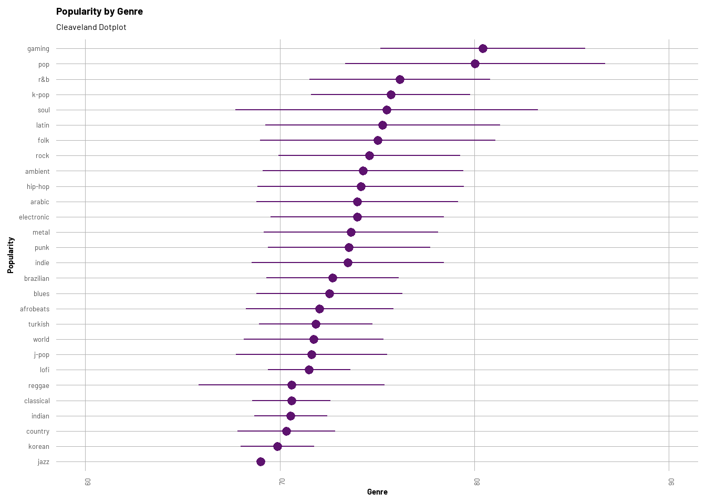
Gaming and pop are by far the most genres with the most popular songs on overage, while jazz, korean, indian, classical and reggae genres contains the least popular tracks.
Is very happy or very sad or angry music more popular?
The valence indicates the overall musical positiveness(emotion) of a track. High valence sounds happy; low valence sounds sad or angry. How are the valence and the track’s popularity connected? Is very sad, angry or happt music more popular than emotional neutral music?
val_pop_scat_plot <-ggplot(data, aes(valence, track_popularity))+geom_point(alpha=0.7,col=vi.col_1)+geom_smooth(method=loess, se=TRUE, color=vi.col_1.3)+labs(title="Musical positiveness and popularity by genre", subtitle="Scatter plot with linear polynomial regression", color="Playlist genre", x="Musical positiveness", y="Popularity")+scale_color_viridis(discrete=TRUE, option="inferno")+scale_x_continuous(breaks=seq(0,1,0.25),limits=c(0,1))+theme_own()val_pop_scat_plot
`geom_smooth()` using formula = 'y ~ x'
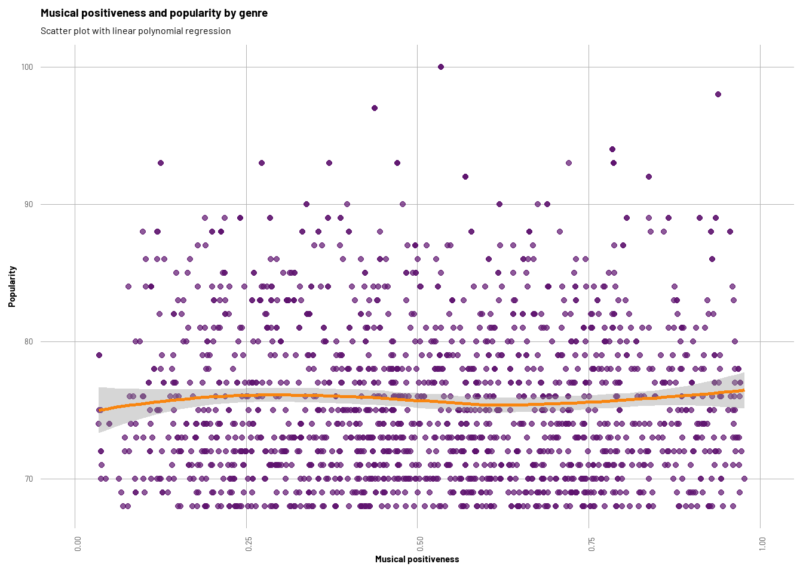
No relation visible.
Of course, we could now move on to the other futures and visualize the relationships. A better method is, to find a suitable model, where all impactful features are included and weighted according their relevance for the tracks popularity. For this, let’s create a training set and a test and validation set. Precondition is, that we have each track only once in the data set, so we must remove duplicates from the set.
#get songs in minutes instead of miliseconds, because could construct some biasfeatures_data <- data %>%mutate(duration_min = duration_ms/60000)# remove the duplicates features_data <- features_data %>%distinct(track_name, .keep_all =TRUE)# only features and predictorfeatures_data <- features_data %>% dplyr::select(track_popularity, energy,tempo, danceability,liveness, loudness,valence, speechiness, instrumentalness, mode, key, acousticness, duration_min)#create partitiontrain_index <-createDataPartition(features_data$track_popularity, p = .7, list =FALSE, times =1)#create training datatrain_data <- features_data[train_index,]#create val and test setval_test_data <- features_data[-train_index,]# remaining 30% into validation and test setval_index <-createDataPartition(val_test_data$track_popularity, p = .6, list =FALSE, times =1)val_data <- val_test_data[val_index,]test_data <- val_test_data[-val_index,]# Outcome of this section is that the data (100%) is split into:# training (~70%)# validation (~20%)# test (~10%)
Are the popularity equally distributed in the training, validation and test set?
While the test and train set looks very similar, the validation set is a bit volatil and has less unpopular tracks.
A simple linear regression model
All in all, we have 12 features, with which the tracks can be characterized. If we compute a linear regression model, we can determine the average effect of a feature, if the feature increases by 1, holding the other predictors fixed. Thus, it is necessary for the interpretation to keep the feature’s bandwith in mind. Let’s create some descriptives of the features and the outcome.
#do we have missing values in here?table(is.na(features_data))
FALSE
18291
# let's get the summariesfeatures_descr<- features_data %>% dplyr::summarise_all(list(min=min, max=max, avg=mean, SD=sd)) #get a nicer data framefeatures_descr <- features_descr %>%pivot_longer(cols=everything(), names_to =c("item", ".value"), names_pattern="(.*)_(.*)") %>%as_tibble() features_descr <- features_descr %>%mutate(across(where(is.numeric), round,2))
Warning: There was 1 warning in `mutate()`.
ℹ In argument: `across(where(is.numeric), round, 2)`.
Caused by warning:
! The `...` argument of `across()` is deprecated as of dplyr 1.1.0.
Supply arguments directly to `.fns` through an anonymous function instead.
# Previously
across(a:b, mean, na.rm = TRUE)
# Now
across(a:b, \(x) mean(x, na.rm = TRUE))
# get a nice tablefeatures_data_table <- features_descr %>%gt() %>%tab_header(title="Descriptives of features",subtitle="Minimum, Maximum, Average and SD of the features") %>%cols_label(item="Feature",min ="Minimum",max ="Maximum") %>%fmt_number(rows=c(1,2),decimals =0) %>%tab_options(column_labels.background.color = vi.col_1)%>%tab_style(style=cell_text(weight='bold',font =google_font("Barlow")),locations=cells_title(groups='title')) %>%tab_style(style=list(cell_fill(color="thistle"),cell_text(weight="bold")),locations=cells_body(columns=item)) %>%gt_theme_nytimes()features_data_table
Descriptives of features
Minimum, Maximum, Average and SD of the features
Feature
Minimum
Maximum
avg
SD
track_popularity
68
100
75
6
energy
0
1
1
0
tempo
49.30
209.69
121.27
27.33
danceability
0.14
0.98
0.65
0.16
liveness
0.02
0.95
0.17
0.13
loudness
-43.64
1.29
-6.83
3.55
valence
0.03
0.98
0.53
0.24
speechiness
0.02
0.85
0.10
0.10
instrumentalness
0.00
0.97
0.04
0.16
mode
0.00
1.00
0.58
0.49
key
0.00
11.00
5.33
3.61
acousticness
0.00
1.00
0.23
0.26
duration_min
1.03
9.12
3.57
0.98
We can clearly see, that the scores have very different ranges. One option is, to normalize the scores, so each score has an average of zero, while the highest possible score is 1 and the lowest possible score is 1. This has the big disadvantage, that it is not that straighforward to interprete the results with such scores. With normalized scores, one unit increase in the tempo means, that if you compare tracks with the lowest tempo to tracks with the average tempo the popularity of a track will increase by XX. You can see, this is a bit complicated description. Concluding, we don’t normalize !
seems only that the energy, the loudness, the speechiness and the duration in minutes have significant and substantial effects.
according to this linear regression, if the energy of a track is very slow, quiet and calm, a tracks popularity is reduced by 4 points, holding the other factors constant. Consistent to this, if a song is louder by ten decibels, the tracks popularity increases bt 2.5.
What seems also very important is the speechiness of songs. Songs with a high number of spoken words have on average 10 points lower popularity as songs with only a few spoken words.
the longest track in the data set is over 9 minutes. If a track is one minute shorter than that, popularity will increase by 0.5 units. However, it would be a bit counterintuitive to assume a linear relationsship here.
So far, so good. In this model a linear relationsship is assumed for each feature. It is highly possible, that we are extremely underfitting the data and the model is not flexible enough for the patterns in reality.
Let’s plot the predicted and the actual values of the data set against each other.
pop_pred <-predict(model_lm1, newdata=features_data)pop_pred_data <-data.frame(actual_pop =features_data$track_popularity,pop_pred = pop_pred)pred_scatter <-ggplot(pop_pred_data, aes(x=pop_pred, y=actual_pop))+geom_point(alpha=0.5, col=vi.col_1)+labs(title="Prediction of the tracks popularity", x="Predicition", y="Given Popularity values")+theme_own()pred_scatter
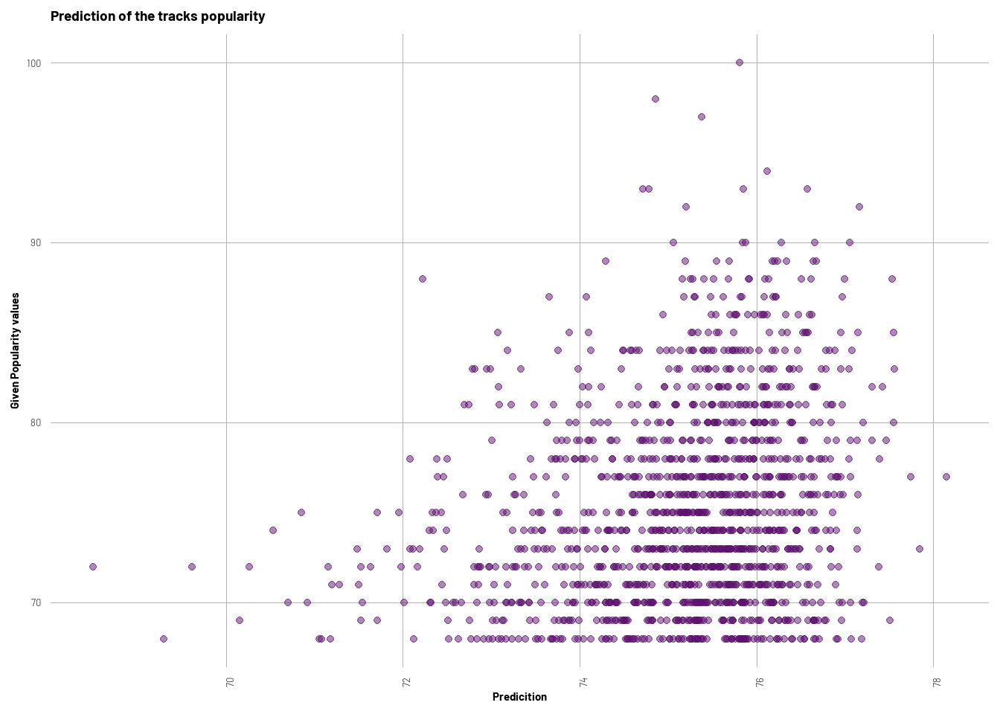
We are far away seeing a linear line here. If model_lm1 would be the perfect model, we could see a linear regression line, because each point on the y axis would be the same as the predicted one.
Tuning Linear Regressions and Model Fit
We can assess the model fit using the mse. It gives us insights, how much our model predicitions differ from the observed values.
#What is the mean squared error for the training set?mse(train_data$track_popularity, predict(model_lm1, train_data))
[1] 28.8
The average deviation from our prediction is 28.8, what is quite high against the background that the minimum popularity ios 68 and the highest 100.
In the next step, we compute the mse for the validation set. The MSE of our validation set helps us to finde the model, that fits not the data it is generated from, but the another subset of the same the same data to avoid overfitting.
We can see, the MSE gets slightly worse, if we predict our model on the validation set.
Using all the features, not all of them seems to be substantial and significant. Sorting all the insignificant factors out, could be problmatic, because for example the effect of energy is computed, holding the other features constant. A better option is, to identify the best subset of the factors.
Therefore, we generate formulas for each possible combination of the features, restricting the number of parameters to 6.
generate_formulas <-function(p, x_vars, y_var) {# Input checkingif (p %%1!=0) stop("Input an integer n")if (p >length(x_vars)) stop("p should be smaller than number of vars")if (!is.character(x_vars)) stop("x_vars should be a character vector")if (!is.character(y_var)) stop("y_vars should be character type")# combn generates all combinations, apply turns them into formula stringsapply(combn(x_vars, p), 2, function(vars) {paste0(y_var, " ~ ", paste(vars, collapse =" + ")) })}#get the name of the featuresfeatures_name <-colnames(features_data[2:13]) %>%as.character()formulas <-generate_formulas(p=6, #number of predictorsx_vars=features_name,y_var="track_popularity")# have a look in the 6 first formulashead(formulas)
[1] "track_popularity ~ energy + tempo + danceability + liveness + loudness + valence"
[2] "track_popularity ~ energy + tempo + danceability + liveness + loudness + speechiness"
[3] "track_popularity ~ energy + tempo + danceability + liveness + loudness + instrumentalness"
[4] "track_popularity ~ energy + tempo + danceability + liveness + loudness + mode"
[5] "track_popularity ~ energy + tempo + danceability + liveness + loudness + key"
[6] "track_popularity ~ energy + tempo + danceability + liveness + loudness + acousticness"
#how many formulas have we?length_formulas <-length(formulas)
Now, let’s create a function to get the MSE of the linear regessions applied on the validation set.
[1] "track_popularity ~ energy + liveness + loudness + duration_min"
Seems like the energy, the loudness, the speechiness and the duration are important factors in all the models.
And which of the models has the smallest MSE on the validation set?
"MSE of the four predictor model"
[1] "MSE of the four predictor model"
min(mses4)
[1] 28.8
"MSE of the five predictor model"
[1] "MSE of the five predictor model"
min(mses5)
[1] 28.8
"MSE of the dix predictor model"
[1] "MSE of the dix predictor model"
min(mses6)
[1] 28.8
Interesting! All of the models have the same MSE and it’s quite high! To do this for all possible combinations could be a bit cumbersome and needs a lot of computational power. Intead, we could use a lasso regression, what is a good option, when a realtively small number of predictors have substantial coefficients like in this regression. For more infos about LASSO see this Chapter
#create model matrixx_train <-model.matrix(track_popularity ~ ., data=train_data)head(x_train)
# let's do a lasso regressionresult <-glmnet(x = x_train[, -1], # X matrix without intercepty = train_data$track_popularity, alpha =1 ) # using k-fold validation to tune lambda# plotplot(result, xvar='lambda')
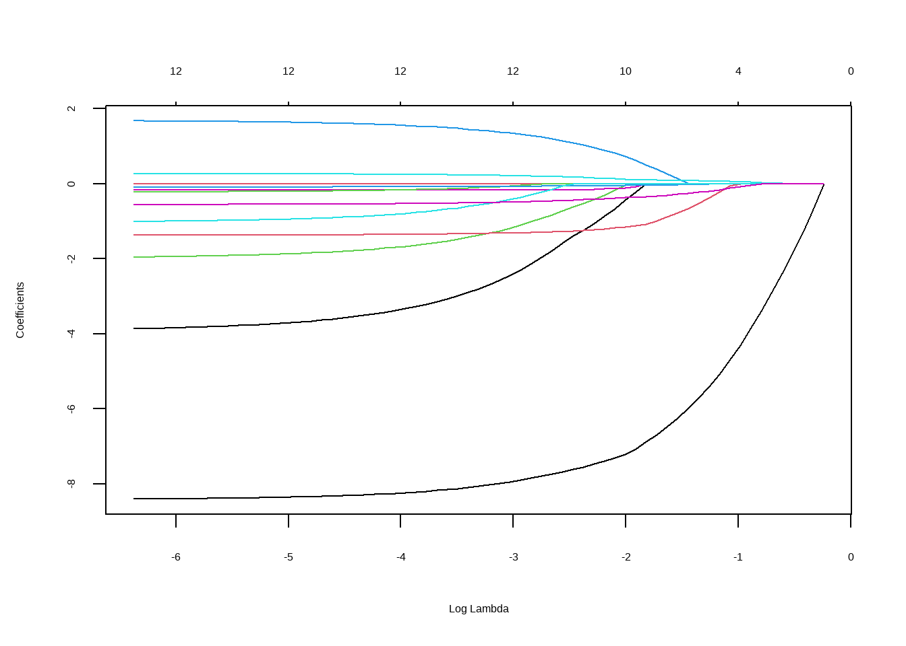
Overall, we have 12 predictors included.
That gives good insights, at which lambda another or multiple predictors are set to zero.
A better way to use lambda is to use cross-validation.
Overall, we could see the linear regression models have a very bad MSE. We can do better than that ! Most of the relationsships in the data aren’t linear, because it’s more about the sweet spot!
Beyond linearity
Now, we investigate the features one by one in order to identify, how they are connected to the popularity.
For better visualization, the following function is helpful:
pred_plot <-function(model) { #defines the function, needs model as an argument x_pred <-seq(min(train_data$energy), max(train_data$energy), length.out =986) # set the x value for pred from the lowest lstat value to the highest. We now get a vector with 500 values from the lowest lstat to the highest. The numbers are generated randomly, so we have simulated data. y_pred <-predict(model, newdata =tibble(energy = x_pred)) #we predict the numeric outcome for y based on model we have defined and use for the prediction the randomly generated data x_pred train_data %>%#we set the data that we want to useggplot(aes(x = energy, y = track_popularity)) +#we define the asthetics and map themgeom_point(alpha=0.7, color="steelblue4") +#we want a scatterplot, so we define the associated geomgeom_line(data =tibble(energy = x_pred, track_popularity = y_pred), size =1, col ="purple") +#we add a line for the predicted y on the predicted x datatheme_own() # we define a nice theme}